仙道
仙道の概要 陰陽五行思想 内丹術 「霊宝畢法」 性命圭旨 鳳宇(ボンウ）道人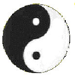 |
| 仙道の概要 | ||
| 道（タオ） | 老子「これが道ですと示せるような道は、恒常の道ではない。これが名ですよと示せるような名は、恒常の道ではない。」老子によると、あらゆる現象の本源は人為を超えた天にあり、これを天道と呼んでいた。人間にとってこの天道を知り、それに従うことが最も尊い道とされていた。そして人為を排した無為自然こそが真の天道であると主張した。丹家において、道とは虚無であり、虚無を"○"と描き、一個の丸い輪を用いて宇宙が未だ創生される以前の状態を表した。 宇宙と人体生命の生成はすべて道にその源を発する。道とは気を存在させる根源であり、気が帰還していくところが道である。 | |
| 気 | 人体を含め、万物は気によって構成されている。気は不可視であり、流動的で運動し、作用をおこすとされている。荘子「人の生は気の集まったものである。集まれば生となり、散ずれば死となる。」 | |
| 陰陽五行思想 | 【陰陽思想】根源たる「道」から先天の一気が生じ、一気は陰陽の二気と成り、陰陽二気は交わり陰陽沖和の三気を生じ、陰陽沖和の三気から万物が生じるとする思想。 【五行思想】万物を成り立たせている５つの気の形態を木・火・土・金・水の５行に範疇化する思想。 | |
| 導引法 | 内丹術は静的姿勢で修煉を行うのに対して、導引法は動作によって内気の運行を促進する。（首を回す。脊椎を揺り動かすなど。） | |
| 存思法 | 体内に観想を集中させることによって気を身体から離れないように体内に留めさせたり、気や神を活性化させる方法。特に道教では人間の身体のうちにも多くの神が宿るとする体内神の思想があり、体内の部位に神を思い浮かべることによって、体内に気をめぐらせたり留めたり、何かを現出させたりする。 | |
| 丹田 | 人間の身体内部に潜在する霊的器官。そのままでは眠った状態にあるが、修練によって器官として完成する。 下丹田(腎臓、精、陰、水） 中丹田（心臓、気、陽、火） 上丹田（泥丸、神） | |
| 内丹術 | 気を練ることで丹田に内丹を作り 、元神（永久不変の霊的本体）をよみがえらせることにより、神仙を目指す修行法。神は気を生じ気は精となり精は形を成し子孫を生み出すという「神→気→精」が順行の経路であり、「精→気→神」の逆行が根源への復帰であるとした。精を気へ作り変えるところから小周天のことを「練精化気」と呼ばれる。大周天ではその気をさらに神へと変容させるので大周天のことを「練気化神」という。 | |
| |
||
| 陰陽五行思想 | ||
| 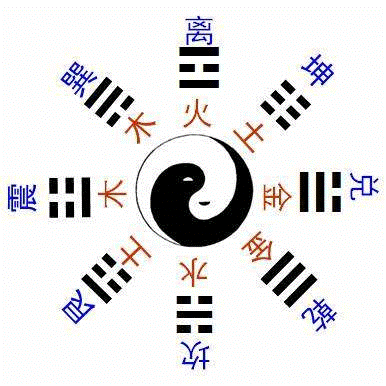 | 【八卦図】 | |
| 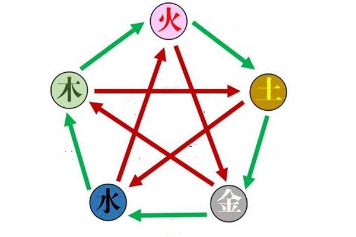 | 【五行相生説】 木→火→土→金→水→木
木は火を生む・火は土を生む・土は金を生む・金は水を生む・水は木を生む 【五行相克説】 木→土→水→火→木 木は土に克つ・土は水に克つ・水は火に克つ・火は金に克つ・金は木に克つ |
|
| 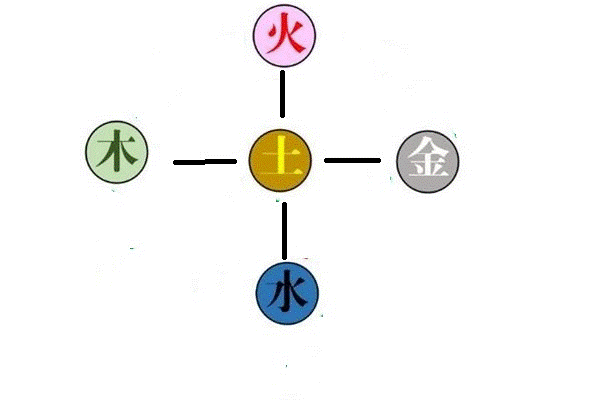 | 【土】 中央（土王説）・脾
【木】 東（陽）・春（朝）・肝 【火】 南（陽）・夏（昼）・心 【金】 西（陰）・秋（夕方）・肺 【水】 北（陰）・冬（夜）・腎 |
|
| |
||
| 内丹術 | |||||||||||||||||||||||
| 小周天 | |||||||||||||||||||||||
| （神） 神とは心臓中の元神（陽龍）である。神は心の主であり、虚無を守って静寂の境地になることにより、神を凝らす。神を凝らすと神は丹田に入る。 | |||||||||||||||||||||||
| (炁） 炁(キ)とは腎臓中の元炁（陰虎）である。精のもとになるものである。 | |||||||||||||||||||||||
| （丹田＜炁穴＞） 臍と背中の線の前より７分、後ろより３分より、垂直に３cm下ったところにある部位。丹田で神と炁を呼吸で融合させる。 | |||||||||||||||||||||||
| （呼吸法） 文火と武火の瞑想法を交互に行う。 | |||||||||||||||||||||||
| (文火） 無念無想で呼吸も意識しない瞑想法。この状態を続けると丹田で精が練られる。 | |||||||||||||||||||||||
(武火） 無念無想だが呼吸のみ意識する瞑想法。丹田に発生した陽気を呼吸を使って、体内を周らせる。 |
|||||||||||||||||||||||
(小薬） 丹田で神と炁と呼吸で融合させると、小薬（小周天の種子）ができる。小薬は、武火により丹田（炁穴）に帰せしめなければならない。 |
|||||||||||||||||||||||
| （小周天） 丹田で発生した小薬を、呼吸を使って、上丹田、中丹田、下丹田へ循環させる。小周天によって丹を練り、大薬（大周天の種子）をつくる。 | |||||||||||||||||||||||
|
|||||||||||||||||||||||
| 大周天 | |||||||||||||||||||||||
| 小周天を修練していくと、潜在的なエネルギー（先天の気）が発動する。それに伴い、さまざまな現象が起きる。 | |||||||||||||||||||||||
| （大薬） 丹田に粘っこい小薬という陽気の固まりができる。小薬はさらに発展して、大薬となる。万病に効くとされている。大薬ができたら、日常生活においても、常に丹に保持し続けるようにする。 | |||||||||||||||||||||||
| (玄関一竅 げんかんいっきょう) 体内と宇宙の接点。ここが開かれた時宇宙の真陽が体内に流れ込む。 | |||||||||||||||||||||||
| （馬陰藏相 ばいんぞうそう） 生殖器が畏縮して勃起しなくなる。 | |||||||||||||||||||||||
| （陽光三現） 眉間に光が現れる。 | |||||||||||||||||||||||
| （真気発動） 潜在的なエネルギーが、体の中を突き抜けて頭頂を開く。それに伴い超能力が発現することもある。 | |||||||||||||||||||||||
| 陽神 | |||||||||||||||||||||||
| 大周天後に丹田に陽神を育てる。陽神とは幽体とは違い、陽気から成る。陽神を育て上げることで、瞑想者は不老不死の気からなる体を獲得する。 | |||||||||||||||||||||||

| |
||
| 「霊宝畢法」 | 教典「霊宝畢法」による内丹術 |
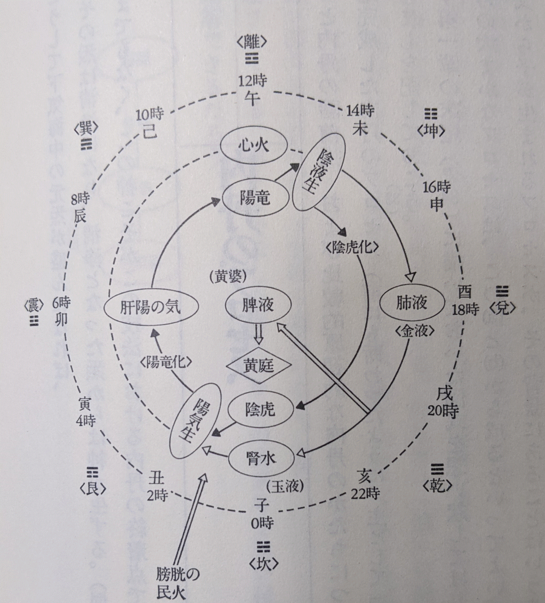 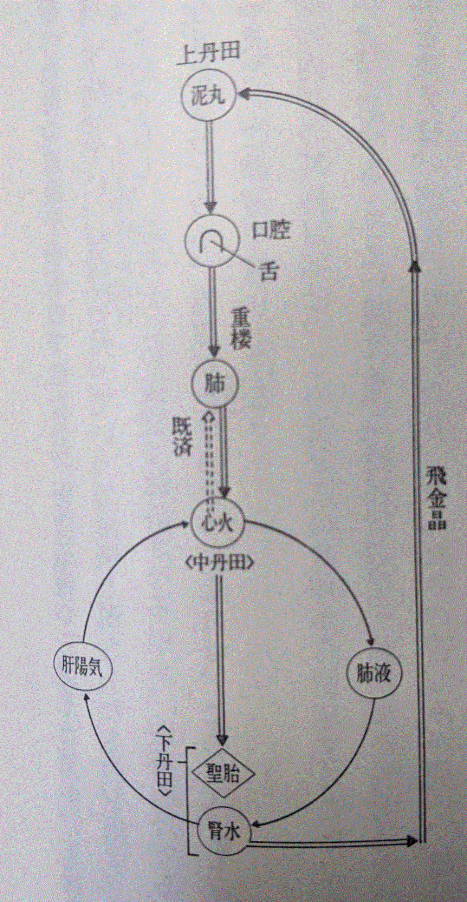 |
| 人仙への道 | ||
| 第１ 匹配陰陽（ひっぱいいんよう） | 匹配とは男女の婚姻のことであり、体内の陰陽の気が交合する環境を整える段階。体内では、まず腎臓で気が生じて、心臓で気が満ちて、液が生じる。そして腎臓で液が満ちて気が生じるというサイクルで回っている。このサイクルは天体の動きとも連動していて１日の時間帯によって気が満ちる時間と液が満ちる時間が決まっている。精と気は互いに養い合う関係にあり、気が集まれば精が増え、精が増えれば気が盛んになる。元気を溜め込んで、気と液の循環を活発にすることが大切である。 | |
| 第2 聚散水火（しゅうさんすいか） | 陽気が微弱な時は身体を動かして陽気を養ったり（散火）、陽気が散漫な時は下丹田を暖めて陽気を散らさないようにする（聚火）。 | |
| 第3 交媾龍虎（こうこうりゅうこ） | 心臓では陽龍（生じたばかりの液）が腎臓では陰虎（生じたばかりの気）ができ、これが丹の材料になる。陽龍と陰虎は互いに引き合うので、自ずと交じりあって下丹田に降りる。 | |
| 第4 焼煉丹薬 | 陽龍と陰虎を交合させて、そこに熱を加える段階。意念を丹田に集中させ、腹部を緊張させることにより熱を加える。はじめは一粒の黍ほどの大きさのものだったのを、日々丹田に陽龍、陰虎を送り続け丹を練り続けることにより、完成した内丹（金丹、聖なる胎）になる。このレベルまで到達したら寿命を延ばすことができるという。 | |
| 地仙への道 | ||
| 第5 肘後飛金晶(ちょうごひきんしょう） | 丹田から背骨沿いに頭部に至る督脈と呼ばれる脈に沿って金晶（陰虎）を上昇させる。 | |
| 第6 玉液還丹 | 督脈沿いに上昇した陽気が頭頂に至ると、液化して玉液となる。玉液は口腔内で唾液として体感され、それを飲み下すことが修練の中心となる。 | |
| 第7 金液還丹 | 気が頭頂まで上昇できずに、肺の方に向かい下丹田に戻る場合がある。これを金液という。その金液は改めて玉液還丹のルートで頭頂まで上げて、下降させて下丹田に降ろす。 | |
| 玉液による還丹によって、聖丹（内丹）からは真気が生じるようになる。聖丹（内丹）から真気が生じるようになってからの周天は大周天と呼ばれる。 | ||
| 天仙への道 | ||
| 第8 朝元（ちょうげん） | 真気と化した聖丹（内丹）によって、五臓の気を練る。練られた五臓の気からは陰気が消え去り陽気となり上丹田に集まる。朝元とは、根源たる宮殿向かって集まるという意味であり、五臓の気と下丹田、中丹田中の純陽を上丹田（泥丸）に集めるのを朝元という。陽神が初めて形を成す。 | |
| 第9 内観 | うっとりするようなイメージが現れてくるが、それを実際のものと思い、見たり聞いたりしてはならない。それは陽神にまじっている陰邪の気なので火で焼いてしまわなければならない。陽神は上丹田で形成されつつあるが、まだ肉体からは脱してはいない。 | |
| 第10 超脱 | 陽神が身体を抜け出す。ただ陽神が身体の外に慣れ安定するまでの間は、何度も身体に戻さなければならない。陽神が成長すると身体を脱げ捨て天仙となる。 | |
| |
||
| 「性命圭旨」 | 「性命圭旨」の図 |
| 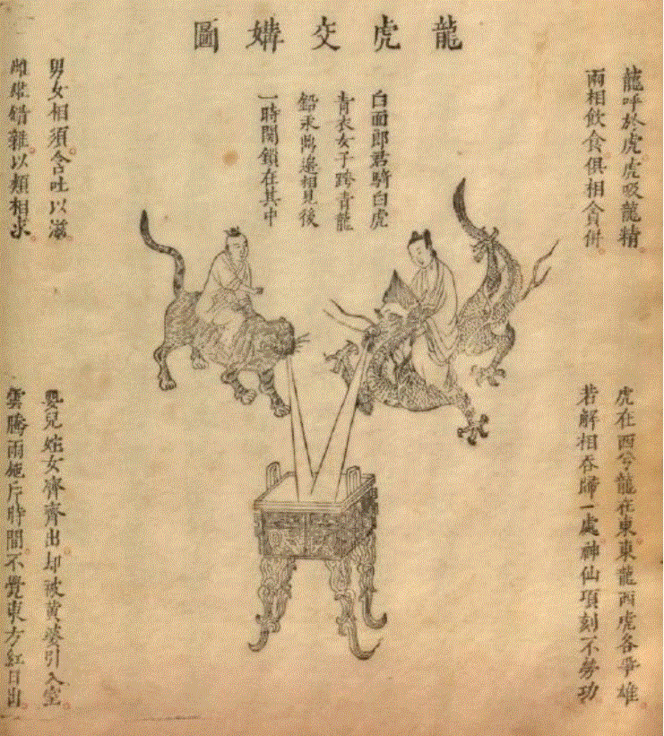 交媾龍虎 |
|
| 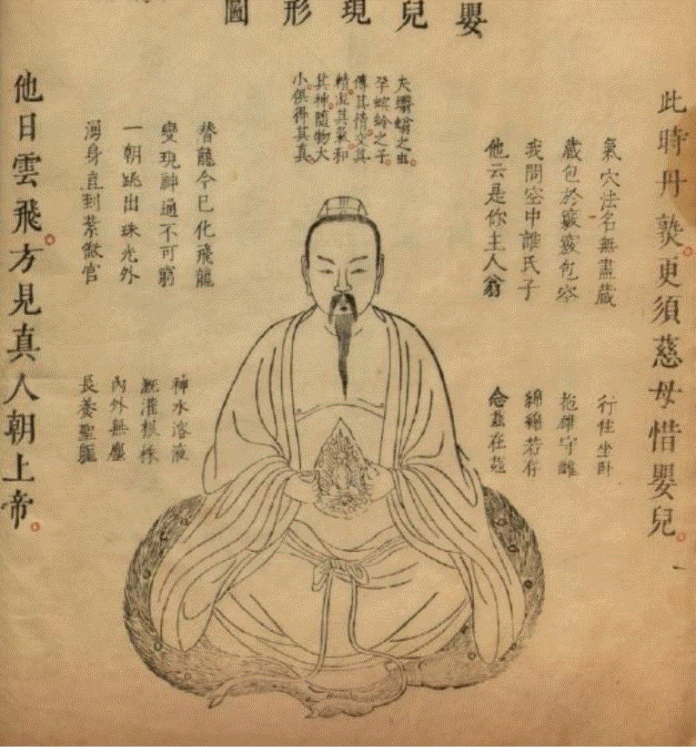 聖なる胎 |
|
| 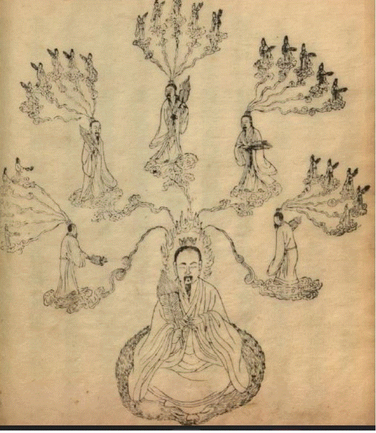 五気朝元 |
|
| 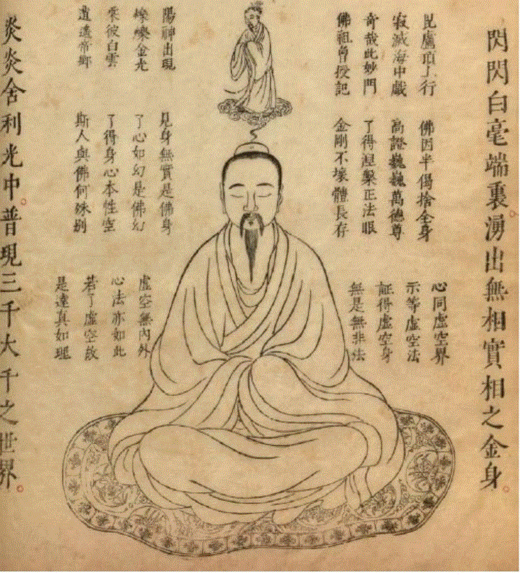 超脱 |
|
| 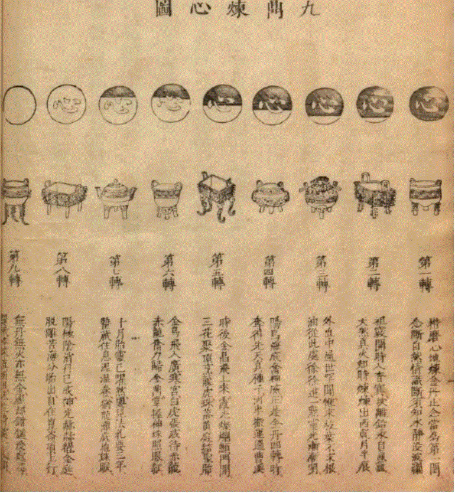 心は丹である。煉丹とは、覆い隠しくらませる物を修練して取り去って、心の本体の本来の姿を回復することである。もしこの心をくらませれば、永遠に輪廻を続けて、真なる本性を失ってしまう。もしこの心を明らかにすれば、すぐさま生死を超越して、涅槃を悟ることができる。 |
| |
||
| 鳳宇道人の修行法 | ||
| 呼吸修練 | ひと呼吸をできるだけ長くする。呼吸を整えることで、心も静まり、神がひらく。 | |
| 原象法 | 呼吸を整えたら、心をひたすら原象文字に帰依させる。そうすると光が見え、その光の中にいろいろな像が見えてきて、透視や予知が可能になる。 | |
|
|
||||